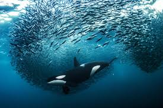
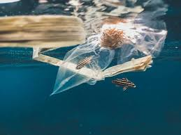
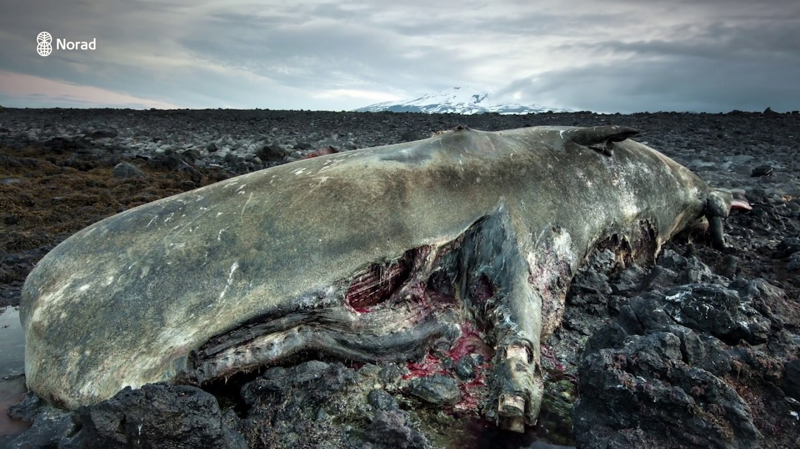

Salah satu tantangan terbesar dalam pencapaian SDG 14 adalah meningkatnya tekanan terhadap ekosistem laut akibat perubahan iklim. Pemanasan suhu permukaan laut, pengasaman laut, dan naiknya permukaan air laut menyebabkan kerusakan terumbu karang, hilangnya habitat pesisir, serta penurunan keanekaragaman hayati. Kondisi ini melemahkan fungsi ekosistem laut sebagai penyedia pangan, pengatur iklim, dan penopang keseimbangan lingkungan global. Jika tidak dikendalikan, dampaknya dapat mengurangi kemampuan laut untuk pulih secara alami dalam jangka panjang.
Tantangan berikutnya adalah aktivitas manusia yang tidak berkelanjutan, terutama penangkapan ikan berlebih, pencemaran plastik, dan limbah industri. Overfishing menurunkan stok ikan dan mengganggu rantai makanan laut, sedangkan polusi memperburuk kualitas air dan merusak organisme kecil yang menjadi dasar ekosistem. Praktik pembukaan lahan di pesisir, reklamasi, serta penggunaan alat tangkap yang merusak juga ikut mempercepat degradasi habitat. Tanpa perubahan pola pemanfaatan sumber daya, tekanan ini akan terus meningkatkan risiko kerusakan laut yang lebih luas.
Selain itu, keterbatasan kapasitas negara dalam pengawasan, pendanaan, dan penegakan hukum turut memperberat upaya mencapai SDG 14. Banyak negara, terutama negara kepulauan dan berkembang, masih menghadapi hambatan dalam pemantauan kawasan laut mereka yang sangat luas. Kerjasama internasional juga belum sepenuhnya merata, sehingga transfer teknologi, data ilmiah, serta pendanaan konservasi belum optimal. Kurangnya kesadaran masyarakat tentang pentingnya menjaga laut semakin menambah kompleksitas tantangan yang harus diatasi.